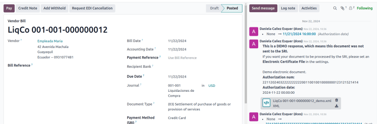
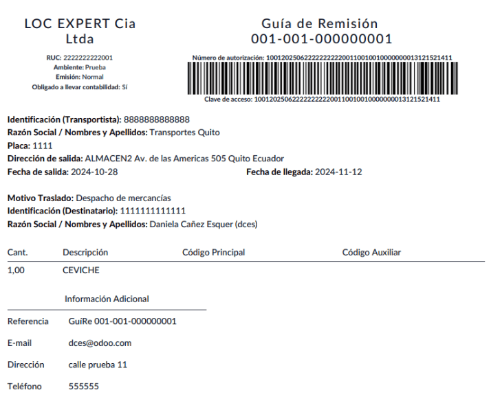

エクアドル¶
With the Ecuadorian localization, electronic documents can be generated using XML, fiscal folio, electronic signature, and direct connection to tax authority SRI.
The supported documents are invoices, credit notes, debit notes, purchase liquidations, and withholdings.
The localization also includes automation to easily predict the withholding tax to be applied to each purchase invoice.
参考
ちなみに
SRI: Servicio de Rentas Internas, the government organization that enforces the payment of taxes in Ecuador.
SRI certificate: Document or digital credential issued by the SRI that is crucial for compliance with Ecuadorian tax laws.
EDI: Electronic Data Interchange, which refers to the electronic transmission of documents.
RIMPE: Regimen Simplificado para Emprendedores y Negocios, the type of taxpayer qualified for SRI.
モジュール¶
Install the following modules to get all the features of the Ecuadorian localization:
名称 |
技術名 |
説明 |
|---|---|---|
エクアドル - 会計 |
|
The default fiscal localization package adds accounting characteristics for the Ecuadorian localization, which represent the minimum configuration required for a company to operate in Ecuador according to the guidelines set by the SRI. The module's installation automatically loads: a chart of accounts, taxes, document types, and tax support types. Additionally, the generation of forms 103 and 104 is automatic. |
エクアドル会計EDI |
|
Includes all the technical and functional requirements to generate and validate Electronics Documents based on the technical documentation published by the SRI. The authorized documents are: Invoices, Credit Notes, Debit Notes, Withholdings, and Purchase liquidations. |
エクアドル会計レポート |
|
フォーム103および104を作成するための技術的および機能的要件が全て含まれています。 |
エクアドル - ATSレポート |
|
DIMM Formularios にアップロード可能なATSレポートXMLファイルを生成するための技術的および機能的要件が全て含まれています。 |
エクアドルウェブサイト |
|
ウェブサイト販売から自動電子請求書を作成するための技術的および機能的要件が全て含まれています。 |
エクアドルPOS |
|
POS販売から自動電子顧客請求書を作成するための技術設定および機能要件を全て含みます。 |
Ecuadorian Delivery Guide |
|
Includes all the technical and functional requirements to generate electronic delivery guides. |
注釈
In some cases, such as when upgrading to a version with additional modules, those modules may not be installed automatically. Any missing modules can be manually installed.
参考
Payroll localizations are documented separately.
Localization overview¶
The Ecuadorian localization package ensures compliance with Ecuadorian fiscal and accounting regulations. It includes tools for managing taxes, fiscal positions, reporting, and a predefined chart of accounts tailored to Ecuador's standards.
The Ecuadorian localization package provides the following key features to ensure compliance with local fiscal and accounting regulations:
勘定科目表: a predefined structure aligned with the latest standards of Ecuador’s Superintendency of Companies, organized into multiple categories and fully compatible with NIIF accounting
Taxes: pre-configured tax rates, including standard VAT, zero-rated, and exempt options
会計ポジション(税と勘定科目のマッピング): automated tax adjustments based on customer or supplier registration status
Document types: classification of transactions like customer invoices and vendor bills using government-defined document types set by the SRI (Ecuador’s tax authority)
プロダクト¶
If products have any withholding taxes, they must be configured on the product form. To do so, go to . On the General Information tab, specify both Purchase Taxes and Profit Withhold.
税金¶
To manage taxes, navigate to . Depending on the tax type, the following options may be required for additional configuration:
Tax Name: Follows a specific format depending on the tax type:
- For IVA (Value-Added Tax):
IVA [percent] (104, [form code] [tax support code] [tax support short name])Example:IVA 12% (104, RUC [tax support code] IVA) - For Income Tax Withholding codes:
Code ATS [percent of withhold] [withhold name]Example:Code ATS 10% Retención a la Fuente
Tax Support: Configure only for the IVA tax. This option is used to register purchase withholdings.
Code ATS: Configure only for income tax withholding codes, as it is necessary to register a withholding.
In the Definition tab:
Tax Grids: Configure the code of a 104 form if it is an IVA tax, and the code of a 103 form if it is an income tax withholding code.
ドキュメントタイプ¶
To access or configure document types, go to . Each document type can have a unique sequence per journal where it is assigned. As part of the localization, the document type includes the country where the document is applicable; also, the data is created automatically when the localization module is installed. The information required for the document types is included by default and doesn't need to be changed.
Company and contact¶
The following fields should be completed for localization purposes on the contact form:
Name: Enter the company or individual's name.
Address: The Street sub-field is required to confirm electronic invoices.
Identification Number: For a company, enter the Ruc. For individuals, enter the Cédula or Passport number.
SRI Taxpayer Type: Select the contact's SRI taxpayer type.
Phone: Enter the company or individual's phone number.
Email: Enter the company or individual's email. This email is used to send electronic documents, such as invoices.
注釈
The SRI Taxpayer Type indicated on the contact form determines which VAT and profit withholding taxes apply when using this contact on a vendor bill.
電子ドキュメント¶
To upload information for electronic documents, go to , and scroll to the Ecuadorian Localization section.
Configure the following information, starting with the Electronic Invoicing section:
会社正式名称
Regime: Select whether the company is in the Regular Regime (without additional messages in the RIDE) or is qualified as in the RIMPE Regime.
Special Taxpayer Number: If the company is qualified as a special taxpayer, complete this field with the company's corresponding tax contributor number.
Forced to Keep Accounting Books: Enable this option if needed.
Withholding section:
Consumables: Enter the code of the default withholding tax used when purchasing goods.
Services: Enter the code of the default withholding tax used when purchasing services.
Credit Card: Enter the code of the default withholding tax used when purchasing with credit cards.
Withhold Agent Number: Enter the company's withholding agent resolution number, if applicable.
SRI Connection section:
Certificate file for SRI: Select the company's SRI certificate. Click SRI Certificates to upload one, if necessary.
Use production servers: Enable this option if electronic documents are used in the production environment; leave it disabled if the testing environment is used instead.
Withholding accounts section:
Sales Tax Base Account: Enter the company's sales tax base account.
Purchase Tax Base Account: Enter the company's sales tax purchase account.
重要
When using the testing environment, EDI data is sent to test servers.
注釈
The values entered in the Consumables and Services withholding fields are used as default values for domestic only when no withholdings are set up on the SRI Taxpayer Type.
The entered Credit Card withholding value is always applied when a credit or debit card SRI payment method is used.
VAT 源泉徴収¶
注釈
This configuration applies only if the SRI recognizes the company as a withholding agent. If not, skip this step.
To configure a VAT withholding, go to . Then, configure the Name of the taxpayer type, the Goods VAT Withholding, and the Services VAT Withholding.
ちなみに
If the Taxpayer Type is Rimpe, configure the Profit Withhold percentage.
プリンタポイント¶
Printer points need to be configured for each type of electronic document used, such as customer invoices, credit notes, and debit notes.
To configure printer points, navigate to . For each electronic document, click New, and enter the following information on the journal form:
Journal Name: Enter in this format:
[Emission Entity]-[Emission Point] [Document Type], e.g.,001-001 Sales Documents.Type: Refers to the journal type; select Sales.
Once the Type is selected, complete the following fields:
Use Documents?: Enable this option if legal invoicing (invoices, debit/credit notes) is used, as this is the standard configuration. If not, select the option to record accounting entries unrelated to legal invoicing documents, such as receipts, tax payments, or journal entries.
Emission Entity: Enter the facility number.
Emission Point: Enter the printer point.
Emission address: Enter the address of the facility.
In the Journal Entries tab, under the Accounting information section, fill in the following fields:
Default Income Account: Enter the default income account.
Dedicated Credit Note Sequence: Enable this option if credit notes should be generated from this printer point (i.e., the journal).
Dedicated Debit Note Sequence: Enable this option if debit notes should be generated from this printer point (i.e., the journal).
Short Code: Enter a unique 5-digit code for the accounting entry sequence (e.g., VT001).
Customer invoices, credit notes, and debit notes must use the same journal as the Emission Point, whereas the Entity Point should be unique per journal.
Finally, in the Advanced Settings tab, check the Electronic invoicing checkbox to enable sending XML/EDI invoices.
源泉徴収¶
To define a withholding journal, go to . For each withholding journal, click New, and enter the following information:
Journal Name: Enter this format:
[Emission Entity]-[Emission Point] [Document Type], e.g.,`001-001 Withholding`.Type: Refers to the journal type. Select Miscellaneous.
Withhold Type: Select Purchase Withhold.
Once the Type and Withhold Type are selected, complete the following fields:
Emission Entity: Enter the facility number.
Emission Point: Enter the printer point.
Emission address: Enter the address of the facility.
In the Journal Entries tab, under the Accounting information section, fill in the following fields:
Default Account: Configure the default income account.
Short Code: Enter a unique 5-digit code for the accounting entry sequence (e.g.,
WT001).
Finally, in the Advanced Settings tab, check the Electronic invoicing checkbox to enable sending XML/EDI invoices.
レポーティング¶
Ecuadorian companies submit fiscal reports to the SRI, with Odoo supporting two main ones: reports 103 and 104.
To get these reports, go to . Click the
Report: icon and select 103 (EC) or 104 (EC).
レポート103¶
This report details income tax withholdings in a given period and can be reported monthly or semi-annually. It includes information about base, tax amounts, and tax codes and can be used for SRI reporting.
レポート104¶
This report details VAT tax and VAT withholding for a given period and can be generated monthly or semi-annually. It includes information about base, tax amounts, and tax codes and can be used for SRI reporting.
ATSレポート¶
To enable downloading the ATS ATS report in XML format,
install the ATS Report (l10n_ec_reports_ats) module.
注釈
エクアドルの ATSレポート モジュールは、会計 アプリと エクアドルEDIモジュール の以前のインストールに依存します。
設定¶
To issue electronic documents, ensure the company is configured as explained in the electronic invoice section. In the ATS, every document generated in Odoo, such as invoices, vendor bills, sales and purchases withholdings, credit notes, and debit notes, is included.
仕入先請求書¶
When generating a vendor bill, register the authorization number from the vendor's invoice. To do so, go to and select the bill. Then, enter the number from the vendor's invoice in the Authorization Number field.
クレジットおよびデビットノート¶
When creating a credit or debit note manually or through an import, link it to the sales invoice it modifies.
注釈
Some information is required to the documents before downloading the ATS file. For example, add the Authorization Number and the SRI Payment Method to documents when needed.
XML生成¶
To generate the ATS report, go to . Choose a period for the desired ATS report, then click ATS. Then, upload the downloaded XML file to DIMM Formularios.
注釈
When downloading the ATS report, Odoo generates a warning pop-up alerting the user if a document(s) has missing or incorrect data. Nevertheless, the XML file can still be downloaded.
会計¶
販売ドキュメント¶
顧客請求書¶
Customer invoices, electronic documents created from sales orders or manually, must contain the following data and, once validated, are sent to the SRI:
Journal: Select the option matching the customer invoice's printer point.
Document Type: Type the document type in this format:
(01) Invoice.Payment Method (SRI): Select how the invoice will be paid.
顧客クレジットノート¶
Customer credit notes are electronic documents sent to the SRI once validated. Credit notes can only be registered from a validated (posted) invoice.
Keep the Document Type on (04) Credit Note in the Credit note window.
Filling out a credit note follows the same process as completing an invoice.
注釈
When creating the first credit note, select Reverse and assign the first credit note
number or, by default, Odoo assigns NotCr 001-001-000000001 as the first credit note number.
顧客デビットノート¶
Customer debit notes are electronic documents sent to the SRI once validated. They can only be registered from a validated (posted) invoice.
In the Use Specific Journal of the Create Debit Note window, select the printer point for the credit note or leave it empty to use the same journal as the original invoice.
顧客源泉徴収¶
Customer withholdings are non-electronic documents issued by the client to apply a withholding to a sale. They can only be registered from a validated (posted) invoice.
On the invoice, click Add Withhold and complete the following information in the Customer withholding window:
Document Number: Enter the withholding number.
Withhold Lines: Select the taxes that the customer is withholding.
源泉徴収を検証済みにする前に、各税額が元のドキュメントと同じであることを確認して下さい。
Purchase documents¶
仕入先請求書¶
Vendor bills, non-electronic documents created from purchase orders or manually, require a specific vendor bill journal.
Vendor bills journal¶
Use the following configuration to set up the vendor bills journal:
Select Purchase as the Type.
Do not tick the Purchase Liquidations checkbox.
Add a Default Expense Account.
To configure a vendor bill, make sure also to complete the following Ecuador-specific fields:
Document Type: Enter this document type:
(01) Invoice.Document number: Enter the document number.
Payment Method (SRI): Select how to pay the vendor bill.
重要
When creating the purchase withholding, verify that the bases (base amounts) are correct. If the amount of the tax in the Vendor bill needs to be edited, click Edit. Or, from the Journal Items tab, click Edit and set the adjustment as desired.
購買清算¶
Purchase liquidations are electronic documents sent to the SRI once they're validated. Companies issue them when they make a purchase, but the vendor does not provide an invoice due to one or more of the following reasons:
Non-residents of Ecuador provided services.
Foreign companies provided services without residency or facility in Ecuador.
Purchase of goods or services from natural persons not registered with a RUC, who cannot issue sales receipts or customer invoices.
Reimbursement for purchasing goods or services must be given to employees in a dependency relationship (full-time employee).
Members of collegiate bodies have provided services in the exercise of their function.
In these cases, a purchase liquidation journal must be created.
Create a purchase liquidation journal¶
To create a purchase liquidations journal, enter the following information:
Journal Name: Enter this format:
[Emission Entity]-[Emission Point] [Document Type], e.g.,001-001 Purchase Liquidations.Type: Refers to the journal type. Select Purchase.
Once the Type is selected, complete the following fields:
Purchase Liquidations: Tick this checkbox to enable purchase liquidations.
Use Documents?: Enable this option if legal invoicing (invoices, debit/credit notes) is used, as this is the standard configuration. If not, select the option to record accounting entries unrelated to legal invoicing documents, such as receipts, tax payments, or journal entries.
Emission Entity: Enter the facility number.
Emission Point: Enter the printer point.
Emission address: Enter the address of the facility.
Short Code: Enter a unique 5-digit code for the accounting entry sequence (e.g.,
PT001).
Finally, in the Advanced Settings tab, check the Electronic invoicing checkbox to enable sending XML/EDI invoices.
Create a purchase liquidation¶
Purchase liquidations, created from purchase orders or manually from vendor bills, must contain the following data:
仕入先: 仕入先の情報を入力します。
Journal: Select the Purchase Liquidation journal with the correct printer point.
Document Type: Enter this document type:
(03) Purchase Liquidation.Document number: Enter the document number (sequence). This must only be entered once, and the sequence will automatically be assigned to the subsequent documents.
Payment Method (SRI): Select how to pay the invoice.
Products: Specify the product with the correct taxes.
Then, validate the Purchase Liquidation.
購買源泉徴収¶
Purchase withholdings are electronic documents sent to the SRI once they're validated. They can only be registered from a validated (posted) invoice.
On the invoice, click Add Withhold and complete the following fields in the Withhold window:
Document number: Enter the document number (sequence). This must only be entered once, and the sequence will automatically be assigned for the next documents.
Withhold lines: The taxes appear automatically according to the configuration of products and vendors. Review if the taxes and tax support are correct. If not, edit and select the correct taxes and tax support.
Then, validate the Withholding.
注釈
Tax support types must be configured on the Vendor Bill. To do so, go to the tax applied on the Vendor Bill and change the Tax Support there.
A withholding tax can be divided into two or more lines, depending on whether two or more withholding percentages apply.
Example
Odoo suggests a VAT withholding of 30% with tax support 01. VAT withholding of 70% can be added to a new line with the same tax support. Odoo allows it if the base total matches the Vendor Bill's total.
Expense reimbursement¶
Expense reimbursements apply to the following cases:
Individual: reimbursement to an employee for miscellaneous expenses (e.g., purchase liquidations)
Legal Entity: reimbursement for incurred expenses, such as representation expenses (e.g., hiring a lawyer)
To enable expense reimbursement, make sure a purchase liquidation journal has been created for an individual or a vendor bills journal for a legal entity.
注釈
In the vendor bills journal, be sure the following necessary configurations are set for a legal entity:
Select Purchase as the Type.
Do not tick the Purchase Liquidations checkbox.
Add a Default Expense Account.
Next, to create a reimbursement, create a vendor bill using the purchase liquidation or vendor bills journal. On the vendor bill, configure the following fields:
Vendor: This field should be an employee.
Document Type: Verify that this field is accurately populated from the journal.
Payment Method (SRI): Select a payment method.
Reimbursement Lines tab: Click Auto Fill Invoice Lines to automatically populate the invoice lines or add the expenses line by line, and provide the following details for each expense:
Partner or authorization number
Date
Document Type
Document Number
Tax Base
Tax
Then, click Confirm Vendor Bill and Process Now. The XML and authorization number for the purchase liquidation are recorded, and the purchase withholding created from this vendor bill includes the reimbursement information.
Electronic delivery guide¶
An Electronic Delivery Guide in Ecuador is a legal document that supports the transportation of goods or merchandise from one place to another within the national territory. It is issued by the sender of the goods and aims to record and justify the movement of products to avoid legal or tax issues. It is a fiscal requirement mandated by the Internal Revenue Service (SRI).
重要
Make sure to install the Ecuadorian
Delivery Guide (l10n_ec_edi_stock) module.
Transporter¶
To create a new carrier (transporter), first create a new contact and fill out the contact information as a Company. Make sure the following fields are complete:
Identification Number: Select RUC and type the carrier's RUC number.
SRI Taxpayer Type: Select Companies - Legal Entities as the partner position in the tax pyramid to automate the computation of VAT withholdings.
Certificate file for SRI¶
To upload the certificate file for SRI, go to , scroll to the Ecuadorian Localization section, and click SRI Certificates in the SRI Connection section. Then, to create a new certificate, click New and fill out the following fields:
Name: The title of the certificate.
Certificate: Use the Upload your file button to upload the SRI certificate.
Certificate Password: Include the password to decrypt the PKS file if required.
Once the certificate is created, click Settings to go back to the settings and ensure the certificate is selected in the Certificate file for SRI field and the Use production servers checkbox is ticked.
倉庫設定¶
To configure a warehouse, first create a new warehouse. Enter the following data for each warehouse that generates an electronic delivery guide:
Entity Point: the emission entity number given by the SRI
Emission Point: the emission point number given by the SRI
Next Delivery Guide Number: the forwarding tracking number (editable after first saving the warehouse).
Generate an electronic delivery guide¶
Once the delivery from inventory is created during the sales workflow, make sure the following fields are complete in the Delivery Guide section on the Additional info tab:
Transporter: Enter the contact created.
Plate Number: Enter the vehicle plate number.
Transfer Reason: By default, Goods dispatch is set; modify as needed.
Start date: Automatically set to the creation date (editable).
End date: Automatically set to 15 days after the start date (editable).
Click Validate, then Generate Delivery Guide. Subsequently, the following information will be available in the Delivery Guide section:
Authorization date: date on which the government authorizes the document.
Authorization number: EDI authorization number (same as access key).
Delivery Guide Status: status of the delivery guide.
To receive the XML and PDF, an email can be sent to the contact used in the Delivery Address field - this is an optional and manual step; the Send Email button needs to be clicked.
Eコマース¶
The ATS Report module enables the following:
Choose the SRI Payment Method for each payment method's configuration.
Customers can manually input their identification type and number during eCommerce checkout.
チェックアウトプロセスの最後に、エクアドル用の検証済電子請求書を自動的に生成します。
オンライン支払¶
To enable online payments, add the relevant payment provider(s) and configure the necessary payment methods. It is mandatory to set the SRI Payment Method for each method.
注釈
Adding the SRI Payment Method is necessary to correctly generate the electronic invoice from an eCommerce sale. Select a payment method to access its configuration menu and field.
自動請求¶
Invoices can be generated after the checkout process.
ちなみに
請求書のEメールテンプレートは 自動請求 オプションの 請求書Eメールテンプレート フィールドから変更することができます。
重要
The sales journal used for invoicing is the first in the priority sequence in the Journal menu.
識別タイプ・番号¶
During the checkout process, the client making a purchase will have the option to indicate their identification type and number. This information is required to generate the electronic invoice after the checkout is completed correctly.
注釈
Verification is done to ensure the Identification Number field is completed and has the correct number of digits. For RUC identification, 13 digits are required, and for Cédula, 9 digits are required.
チェックアウトプロセスが完了すると、確定した顧客請求書が作成され、手動または非同期でSRIに送信できます。
Point of sale electronic invoicing¶
Make sure the Ecuadorian module for Point of Sale (l10n_ec_edi_pos) is installed to enable the following features and configurations:
各支払方法設定でSRI支払方法を選択して下さい。
Manually input the customer's identification type and number when creating a new contact on POS.
チェックアウトプロセスの最後に、エクアドル用の検証済電子請求書を自動的に生成します。
支払方法設定¶
POSでの支払方法を作成するには、販売管理、 の順にアクセスします。次に、支払方法フォームで:guilabel:`SRI支払方法`を設定します。
請求フロー¶
識別タイプ・番号¶
The P0S cashier can create a new contact for a customer who requests an invoice from an open POS session.
エクアドルモジュール は、連絡先作成フォームに2つの新しいフィールドを追加します。識別タイプ と 登録番号 です。
注釈
As the identification number length differs depending on the identification type, Odoo automatically checks the Tax ID field when saving the contact form. To manually ensure the length is correct, know that the RUC and Citizenship types require 13 and 10 digits, respectively.
電子請求書:匿名の最終消費者¶
顧客が購買に対する電子請求書の発行を要求していない場合も、Odooは自動的に顧客を 最終消費者 として設定し、いずれにせよ電子請求書を生成します。
注釈
If the client requests a credit note due to a return of this type of purchase, the credit note should be made using the client's real contact information. Credit notes cannot be created for Consumidor Final and can be managed directly from the POS session.
電子請求書:特定の顧客¶
顧客が購買に対する請求書を要求した場合、その顧客の財務情報を含む連絡先を選択または作成することができます。これにより、正確な顧客情報で請求書が作成されます。
注釈
クライアントがこのような購買の返品を理由にクレジットノートを要求した場合、クレジットノートと返品処理は、 POSセッションから直接 管理することができます。